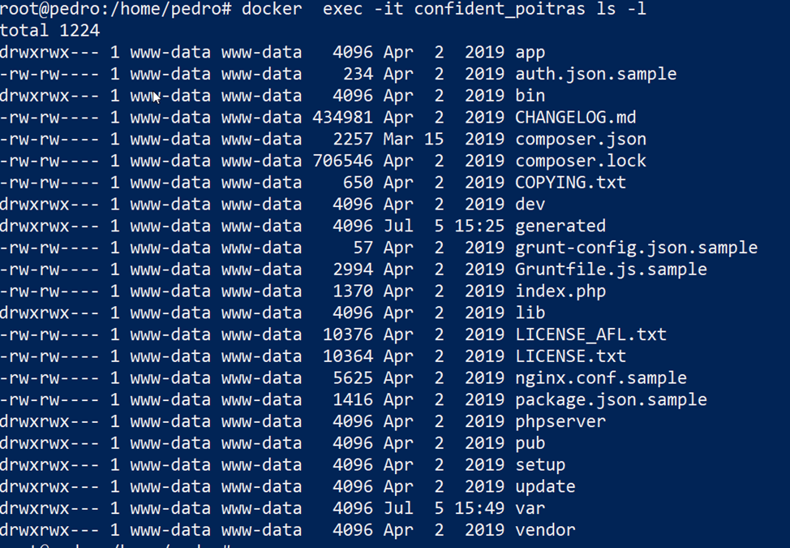
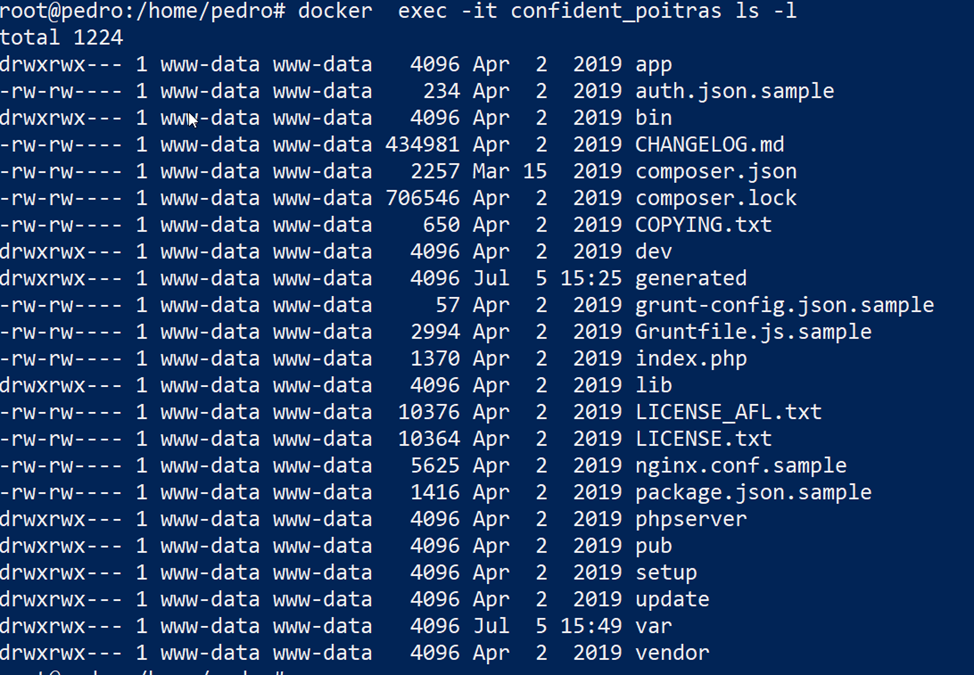

Es posible la ejecución de parámetros en el contenedor tanto al iniciarlo como una vez en ejecución usando los comandos:
docker run
docker exec
Por ejemplo para realizar un ls dentro de un contenedor ya iniciado:

Es posible la ejecución de parámetros en el contenedor tanto al iniciarlo como una vez en ejecución usando los comandos:
docker run
docker exec
Por ejemplo para realizar un ls dentro de un contenedor ya iniciado:

Se puede encontrar información mucho más completa en la documentación oficial a cerca del comando docker exec.
Tener que estar ejecutando cada uno de los comandos en el contenedor para configurar el mismo es una tarea tediosa, además es interesante adaptar una imagen base a las necesidades del proyecto. Para crear una imagen personalizada se utiliza el fichero Dockfile que contiene comandos que se ejecutan al instanciar la imagen, estos comandos se encuentran precedidos de otros que indican ciertas acciones:
Por supuesto chown solo es aplicable en contenedores Linux. La segunda forma simplemente añade un conjunto de ficheros/directorios de forma local y/o remota. En caso de añadir ficheros comprimidos es capaz de reconocerlos y descomprimir.
FROM ubuntu
RUN mkdir /myvol
RUN echo "hello world" > /myvol/greeting
VOLUME /myvol
Una vez creado el Dockfile ejecutar el comando en el directorio en el que se encuentra el fichero Dockfile:
docker build -t nombre_imagen .Este documento cubre las mejores prácticas y métodos recomendados para crear imágenes eficientes: https://docs.docker.com/develop/develop-images/dockerfile_best-practices/.
Docker crea imágenes automáticamente leyendo las instrucciones de un archivo Dockerfile de texto que contiene todos los comandos, necesarios para crear una imagen determinada. El formato específico y un conjunto de instrucciones de Dockerfile. que puede encontrar en la referencia de la documentación oficial.
Un ejemplo de fichero Dockfile basado en Debian en el que se instala Apache y se copia en la carpeta por defecto un fichero del anfitrión.
FROM debian
RUN apt-get update
RUN DEBIAN_FRONTEND="noninteractive" apt-get install apache2 -y
EXPOSE 80
copy ./proyecto/* /var/www/html
CMD ["/bin/bash"]